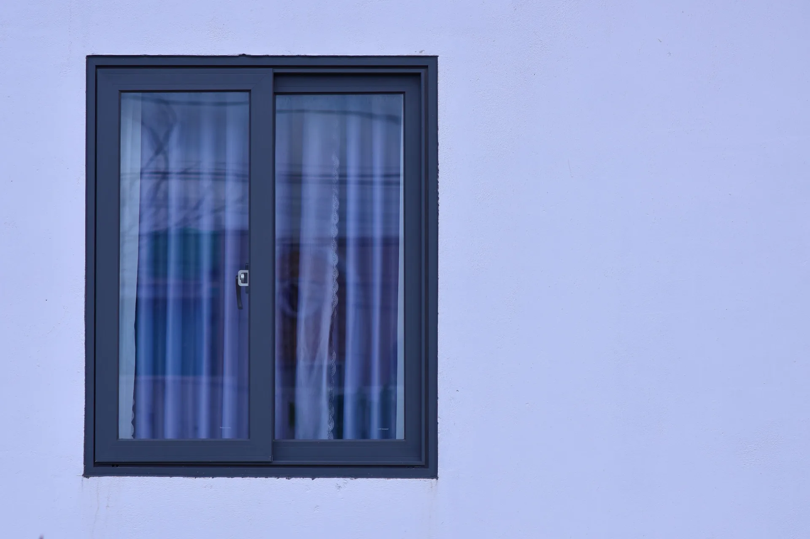

Замер — это больше, чем ширина и высота
Примерные размеры подходят для предварительного расчёта. Для заказа нужен профессиональный замер с проверкой геометрии, основания и примыканий. Согласуйте открывание, подоконник, откосы и дополнительные элементы. Покажите мебель и шторы, которые могут мешать створкам.

Согласуйте весь объём работ
Уточните доставку, подъём, демонтаж, монтаж, отделку и вывоз старых окон. При слабом основании дополнительные работы и цену согласуют до выполнения. Отдельно узнайте, когда завершат откосы: это может быть позже дня установки.
Подготовьте комнату
Освободите подоконник и проход, снимите шторы, уберите хрупкие вещи. Защитите мебель, технику и пол. Согласуйте место для инструментов и старых окон. Во время монтажа ограничьте доступ детей и животных, уточните последовательность работ и необходимость вашего присутствия.
На что смотреть при приёмке
С мастером проверьте комплектацию, поверхности и открывание без заеданий. Уточните крепление и защиту примыканий: пена не заменяет крепёж и защиту от внешних воздействий. Скрытые работы нельзя проверить только по готовому окну — полезны фотографии этапов и документы.
Что получить после установки
Зафиксируйте замечания и договоритесь об их устранении. Получите документы и инструкции.
- Описание комплектации и выполненных работ.
- Инструкции по открыванию, уходу и безопасному использованию.
- Условия гарантии на изделия и работы, контакты для обращения.
- Понятный порядок завершения отделки, если она выполняется позже.